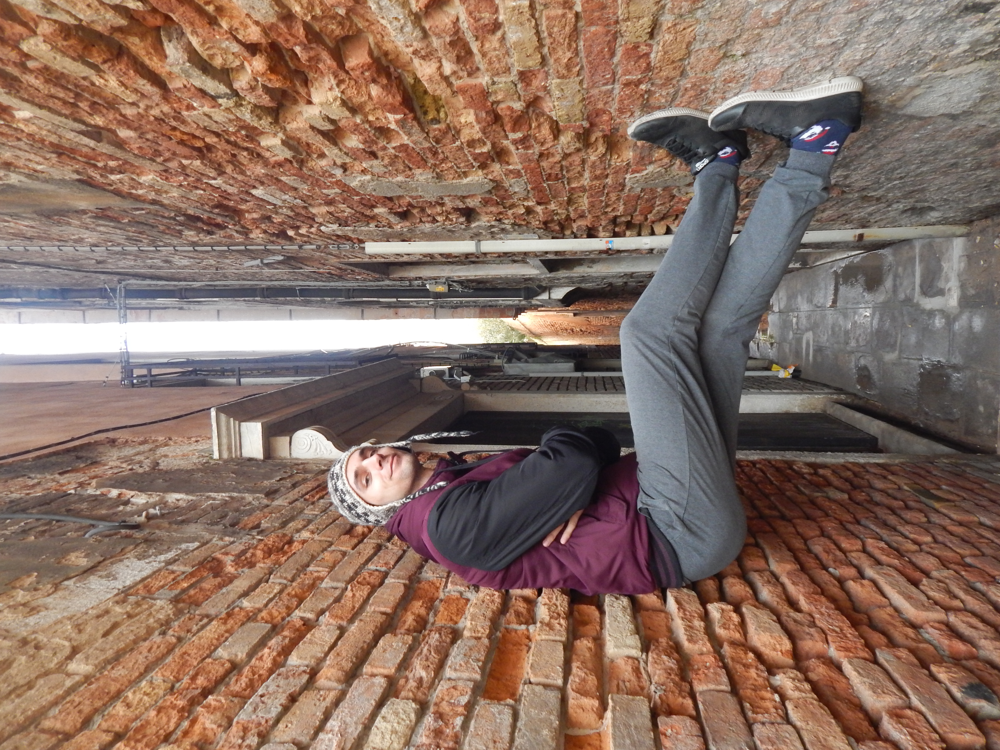
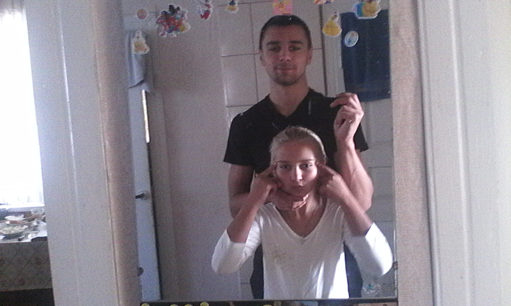
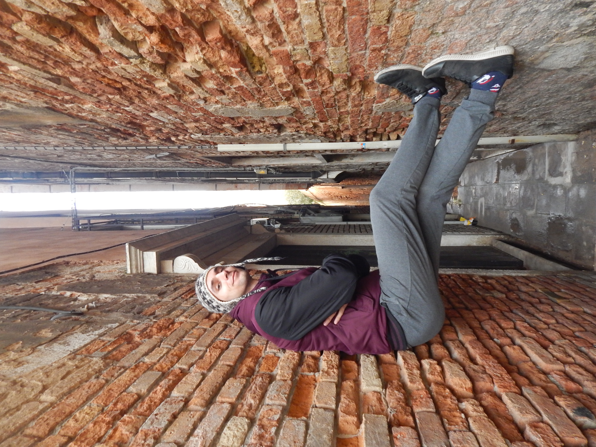
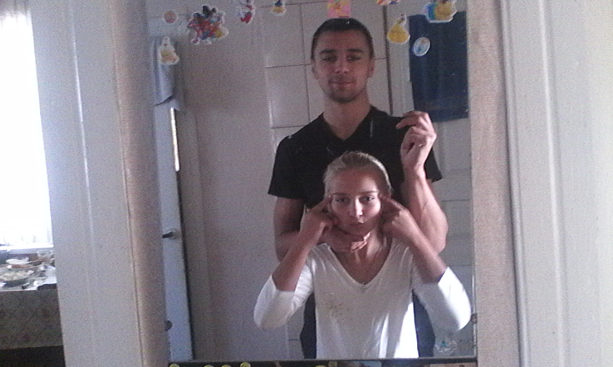
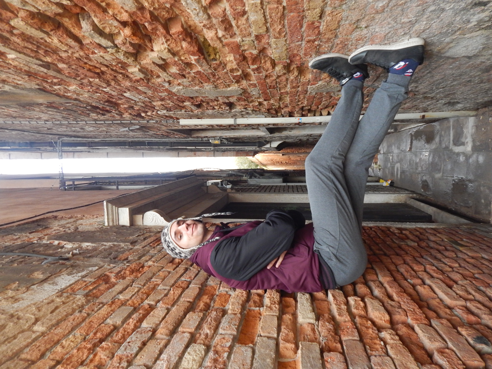
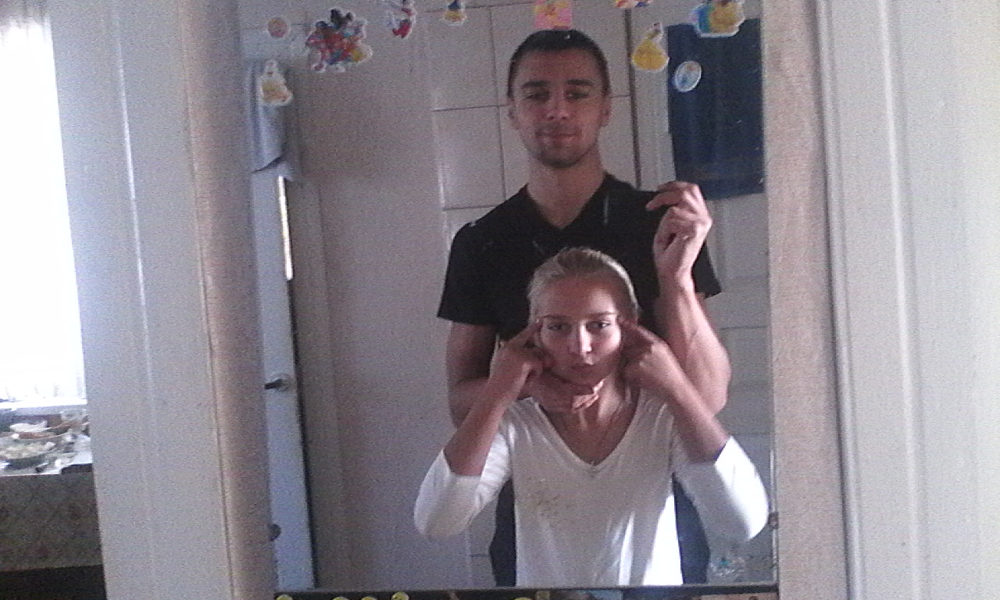

Бажання стати щасливим почало виникати в мені у підлітковому віці. Не знаю звідки у мене любов до хороших фільмів, мабуть всі ці спори знайомих, особливо старших, про кращий фільм мали свій вплив, але я почав дивитися фільми які ніхто з моїх знайомих не дивився. Звичайно це правило не без винятків, скоріше це виняток із правила бо частіше фільм для пергляду вибирав мій брат, але цей виняток я таємно в думках вважав справді хорошими фільмами, та поговорити про них мені рідко було з ким. Саме ці особливі для мене фільми сформували у мене бажання стати щасливим. Звичайно, що це не єдиний фактор, але на мою думку, ключовий.
Не знаю у всіх так чи ні, але в мене пошуки щастя почалися, звичайно ж, зі скарг. Я не міг знайти щастя, бо ..., тому що..., адже... . Довгий час переконання, що мені потрібно лише знайти свою другу половинку і щастя прийде, палало й чорніло в мені, палало і чорніло, а як інакше? Весь цей час я не був здатен навіть заговорити з дівчиною, якщо вона мені сподобалася. У своє виправдання скажу, це був великий тиск, від цього залежало найважливіше у моєму житті - щастя. Як тут вести ненав'язливу бесіду. Усе почало змінюватися в момент, коли я рішив купити свою першу книгу, так - у 19 р.. Оскільки крім Гаррі Поттера мені нічого не подобалося, то я купив роман Джоан Роулінг "Несподівана вакансія". Це дало мені знання, що у кожного свої проблеми, і що не тільки Гаррі Поттер - крутий. Тож з того моменту в мене завжди є поруч якась непрочитана книга, ось уже декілька років. І хоча всі вони цікаві й змінювали мене в міру мого розуміння їх історії, та головним досягненням читання вважаю те, що я почав менше грати в комп'ютерні ігри, ще менше дивитися фільмів які завчасно мені не подобалися, менше робити того, що мені не подобається й саме життя стало більш різноманітним і щасливішим.
В певний момент, не пам'ятаю що мене підштовхнуло, я почав гуглити "щастя" і в підсумку натрапив на Тоні Роббінса, TED і ще декілька ютуб каналів, які переглядав не так довго аби їх запам'ятати, але їм я також щиро вдячний. Переглядаючи ці всі відео протягом тривалого часу, до мене дійшло, що я зовсім не вмію піклуватися й треба якось це покращити. Оскільки дівчини у мене не було, а щоб завоювати чиєсь серце потрібно вміти хоча б трішки проявляти турботу, це здається мені розумним, то я вирішив спробувати більше часу проводити з сім'єю. В мене є менша сестра й мама, тож практикуватися було на кому. З сестрою мені вдалося досить легко,ще більше, покращити стосунки: ми почали більше гуляти, разом дивитися фільми, готувати і т.д. Це було непогано, як на мене. І точно краще ніж до цього. Я продовжую це робити й хочеться вже пошвидше дізнатися, якою вона буде, який вплив матимуть мої початкові спроби піклування. Мамі намагаюся більше допомагати, десь щось піднести, щось зробити на її прохання, але й сперечаюся трішки, бо це займає іноді більше часу, ніж я готовий віддати. Також частіше телефоную - просто для розмов. Це більше ніж нічого, візуально так здається. Їх життя з того часу покращилося, я це бачу зі сторони й надіюся, що це не лише моє суб'єктивне бачення.
З того часу я скептично ставлюся до пошуку щастя. Постійне щастя не потребує гарного й дружелюбного настрою щохвилини. Можна почуватися щасливим і сумуючи за кимось, трішки шкодуючи
про щось, терплячи якісь навантаження, зустрічаючи складнощі. Я почуваюся щасливим постійно, щохвилини, ось уже декілька років. Але за цей час були й складні для мене моменти. Та
труднощі не роблять життя поганим і нещасним. Якщо весь час перебувати в пошуку кращого життя, брати до уваги як можна більше аспектів "щастя" й працювати над ними, слідкувати за
собою, здоров'ям - то я не вірю що можна почуватися нещасним. Просто на це не буде часу, енергії чи ще чомусь. Мені дуже кортить ділитися цими знаннями, але знайомі мене не слухають.
Я дуже радий, що слухає моя дівчина, адже саме тому ми і разом, бо я почав шукати щастя, зміг трансформувати скарги на розвиток (покращення й полегшення життя) й все це спрямувало мене
до неї. Моє поняття щастя повністю змінилося. Воно тепер містить пункти, ці пункти свої підпункти і так декілька разів, а в кінці цього дерева стоїть вибір: поспати ще чи прокинутися й
приготувати сніданок?
Надіюся у мене завжди будуть сили приготувати сніданок.

